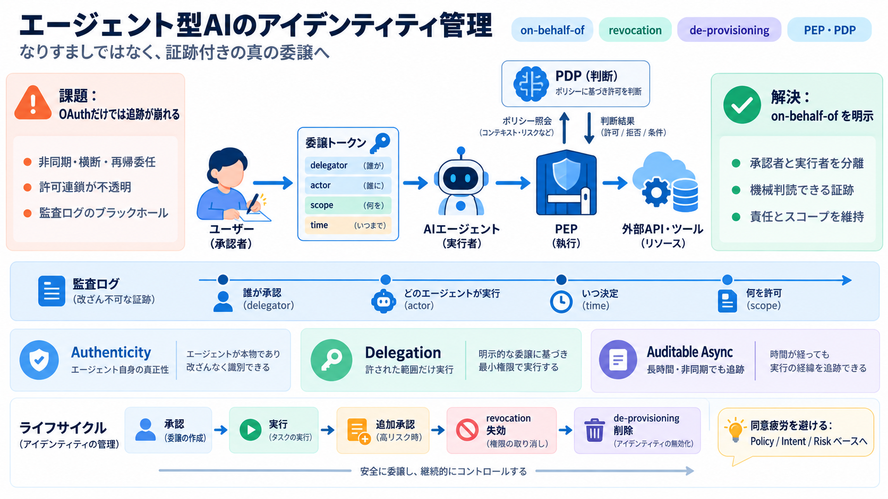

"of agent" or "to agent"? - GrammarDesk.com
Prepositions used with "agent". "of agent" or "to agent"? Word Frequency. In Top 1000 words. In 35% of cases agent of is…

エージェント型AIが外部サービスへアクセス・実行する時に必要な、認証（Authentication）・認可（Authorization）・アイデンティティ管理（Identity Management）の考え方を整理します。
Key terms: on-behalf-of（代理）／ revocation（失効）／ de-provisioning（削除）／ PEP & PDP（分離）
従来のOAuth/OIDCは単一のtrust domainでは機能しやすい一方、エージェントは非同期・横断・再帰的委任・代理実行で許可連鎖と監査が破綻しやすいです。
誰が実行したか／何を許可したか／いつ承認されたかを一貫して追跡できない。
機械判読可能に actor（行為者）と delegate（委譲）を分離し、監査ログの“ブラックホール”を避ける。
エージェント実行は“サインした人”の意思を超えがちです。だから委譲（delegation）は、なりすましではなくon-behalf-ofとして証跡付きで扱う必要があります（証跡＝監査可能性）。
ユーザーと区別できない振る舞いになり、責任の所在とログが曖昧になりやすい。
トークン/ログ上で ユーザー と エージェント を分離し、「承認者」と「実行者」を追える。
認可判断を PDP（Policy Decision Point）と PEP（Policy Enforcement Point）に分け、監査ログの断絶を減らすことが推奨されます。
ポリシーにもとづき「この委譲トークンは何を許すか」を決める。
（意図）
決定を受けて、実際のAPI/ツール呼び出しを制御する。
（強制）
エージェントのアイデンティティ管理は、(i)真正性、(ii)委譲範囲、(iii)非同期でも壊れない監査/許可継続の3軸で考えると整理しやすいです。
エージェント自身が誰かを保証する（本人確認だけでなく“真正性”）。
ユーザーが許した範囲（スコープ/制約）を守らせる。
長時間・非同期でも 承認の根拠と 実行の結果を追跡可能にする。
単一trust domainでのエージェント利用なら、OAuth 2.1（PKCE付き）、SSO/SCIM、MCPのようなツール連携プロトコルが有効とされています。
同期的・単一ドメイン中心。クライアント/ユーザーの関係が明確で、監査要件も設計しやすい。
非同期・横断・再帰委任・代理実行が増えるほど、許可連鎖と監査整合性が追いつきにくい。
非同期実行では、初回承認のまま進むと追加で高リスク操作の承認が必要になります。そこでCIBAのような非同期・アウトオブバンド承認が重要です。
非同期・アウトオブバンドで承認を扱い、長時間タスクでも人の承認を適切に差し込む。
トークン期限/失効に加え、実行回数上限や予測可能な制約で“暴走半径”を抑える。
エージェントが増えるほど都度同意が膨張し、ユーザーは形式的に承認してしまう危険があります（consent fatigue）。そこで政策ベース・意図ベース・リスクベースへ移行が必要です。
予算・速度・データ階層などを事前定義して、実行上限で抑制する。
ユーザーの目的に整合する範囲だけを許し、目的外の拡張を抑える。
必要な時だけバックチャネルで承認要求。常時確認を避ける。
監査可能性のギャップを埋める鍵は、委譲トークンに「ユーザー（delegator）」と「エージェント（delegatee/actor）」を別々に埋め込むことです。
誰が承認し、どのエージェントが実行し、いつ決定したかを機械判読で残す。
承認者/実行者の区別を維持し、再帰的委任でも責任が霧散しない形にする。
ブラウザ/コンピュータ操作エージェントはHTTP APIの標準的認可を迂回し得ます。そこでWeb上の“正当なボット”識別が必要です。
HTTPリクエスト認可だけでは、画面操作やUI経由の行動の真正性を担保しづらい。
Web Bot Authのように、署名で検証可能な身元付与を行い、認証領域を拡張する。
revocation（失効）はセッションを止めても、アイデンティティ登録や関連する権限関係が残ると再利用のリスクが残り得ます。だからde-provisioningが必要です。
現在のアクセスを止める（例：トークンやセッションの失効）。
アイデンティティ自体と付随権限を恒久的に除去し、侵害時の“最終手段”にする。
結論は「なりすましではなく、真の委譲（on-behalf-of）を証跡付きで実装する」ことです。そして取消（revocation）・削除（de-provisioning）を含むライフサイクルを、相互運用可能な標準で実現することが広域自律エージェント時代の安全保障になります。
相互運用標準の成熟度や実装可能性、移行コストが未知だと“標準が整えば解決”と早合点しがち。
自組織の要件（規制/監査/実行時間/ユーザー数）に合わせ、段階導入と検証手順を別途用意する。
Prepositions used with "agent". "of agent" or "to agent"? Word Frequency. In Top 1000 words. In 35% of cases agent of is…
The Preposition of Agent and Instrument describes the doer of the action or used to perform an action.
This video is a short English grammar lesson focused on the "Preposition of Agent." It presents a multiple-choice quiz, …
5, the Agent is once more not the people but the “problems.” Finally in Sentence 6, the Agent is the subject, “immigrant…
What does the word "agent" mean in English grammar?